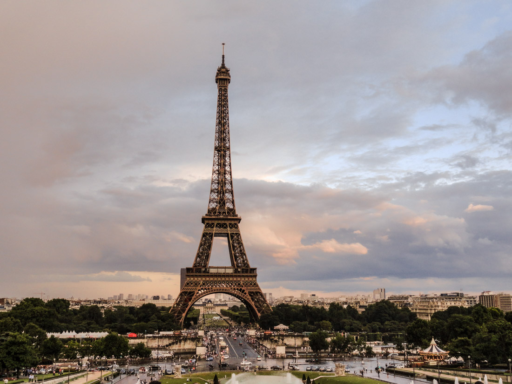

Pont des Arts - The Love Lock Bridge
Yung una talaga sa gusto ko mavisit sa Paris ay yung Pont des Arts, yung sikat na Love Lock Bridge. Sobrang ganda kasi ng idea na mag-attach ka ng lock sa bridge kasama yung taong mahal mo, tapos itatapon yung susi sa ilog. Gusto ko lang talaga mapuntahan yun at makita mismo kung gaano karaming locks na yung nakadikit doon. Parang ang sweet lang ng vibe nun.

Why I Want to Visit Paris
Nagsimula kong magustuhan to nung time na kami pa ni Audrey kasi gustong gusto nya talaga na makapunta dito kaya every time na makakakita sya ng tungkol sa Paris o mga magagandang lugar sa Paris, pinapakita nya sakin so syempre ako din nagagandahan. Ayun dun nagsimula ang love ko sa Paris.
Gusto ko ring maramdaman kung gaano siya talaga kalaki in person. Kasi sa photos at videos, okay na siya pero alam ko ibang-iba yun pag nandoon ka na talaga. Yung makita mo mismo kung gaano kalaki yung Eiffel Tower, yung dami ng tao sa streets, yung buong atmosphere ng lugar. Yun yung gusto ko maexperience.
Siyempre yung Eiffel Tower mismo, gusto ko talaga makita yan live lalo na sa gabi pag naka-light up na siya. Sabi ng mga nakapunta na, iba talaga yung feeling pag nakita mo siya mismo compared sa pictures.
Someday mapupuntahan ko na rin yan. Paris is one of those places na parang worth it talaga kahit ilang beses mo pang puntahan.